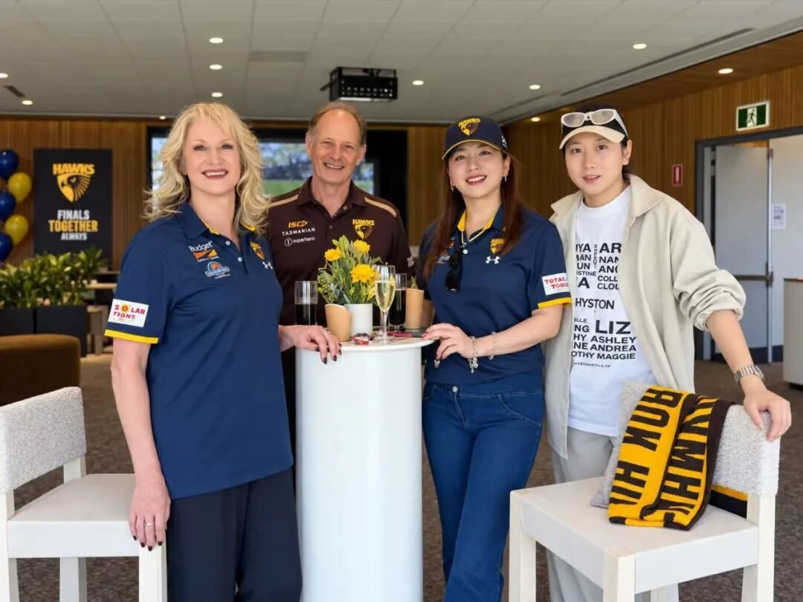
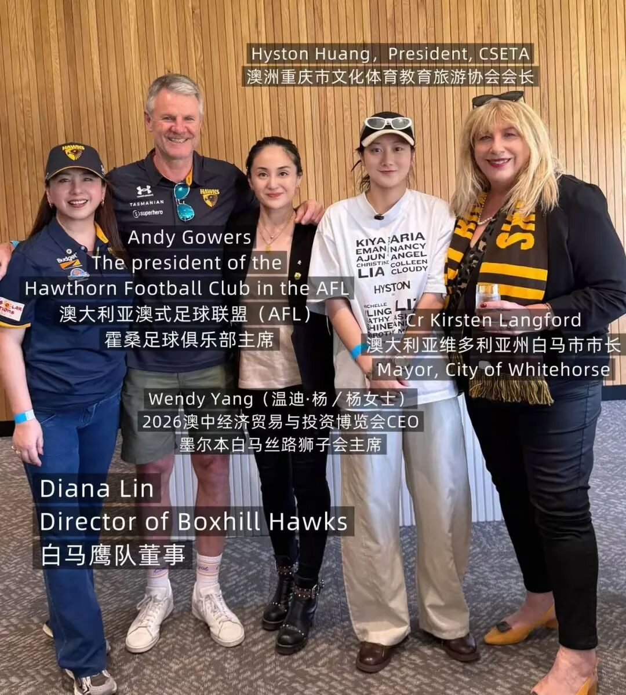
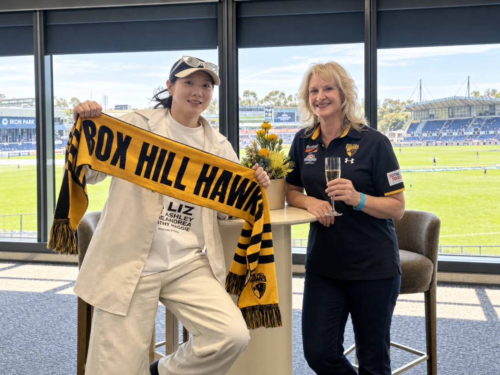
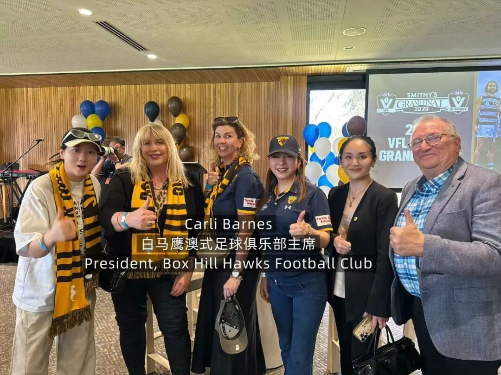

以体育为桥｜从VFL总决赛走进澳大利亚社区体育与城市连接
近日，澳洲重庆市文化体育教育旅游协会会长黄欣悦受邀出席维多利亚州VFL与VFLW年度总决赛，与地方政府、职业体育俱乐部、商业机构及社区代表交流，进一步了解澳大利亚体育与城市、社区之间的紧密联系，并探索重庆与澳大利亚在体育、青年、文化及社区领域更多交流可能。

一、从一场总决赛，看见澳洲体育背后的社区网络
VFL与VFLW分别是维多利亚州重要的男子和女子澳式足球赛事体系。年度总决赛不仅是赛季竞技成果的集中呈现，也是俱乐部成员、合作伙伴、地方政府、社区代表和球迷共同参与的体育盛会。
在澳大利亚，体育俱乐部的角色并不局限于比赛和运动员培养。会员体系、青少年项目、志愿服务、公益活动及社区合作，让俱乐部成为连接居民、企业和地方社区的重要平台。
黄欣悦会长表示，澳式足球能够成为澳大利亚具有代表性的体育文化，与其长期扎根社区密不可分。体育在这里不仅关乎比赛胜负，也承载着归属感、代际记忆和城市认同。
二、对话白马市政府，体育现场延伸到AI创新交流
活动现场，黄欣悦会长与白马市市长 Cr Kirsten Langford、Sparks Ward 市议员 Cr Peter Allan 进行了友好交流。

白马市位于墨尔本东部，拥有活跃而多元的社区网络。Box Hill作为区内重要的商业、文化和公共服务中心，也是华人及亚洲社区较为集中的地区之一。
值得关注的是，此次见面并未停留在赛事与社区交流层面。
交流过程中，白马市市长Cr Kirsten Langford主动向黄欣悦会长问起近期开展的AI相关业务，并提到自己已在社交媒体上关注到HYSTON近期发布的一系列AI新产品及创意内容。这一话题也成为当天双方交流的重要部分。
黄欣悦会长向Langford市长进一步介绍了HYSTON目前在AI内容生产、AI广告、品牌视觉及AI-native创意制作等方向的探索，并分享了团队如何将生成式人工智能真正应用到商业传播和内容生产流程中，而不仅仅停留在技术展示层面。
双方围绕AI如何进入现实商业场景、品牌如何利用AI降低创意制作门槛，以及AI广告未来在城市传播、企业品牌和公共文化项目中的应用空间进行了较长时间的交流。
对于HYSTON而言，这次交流也很特别。
从今年6月《重庆市民》城市音乐Live Film暨重庆直辖二十九周年庆祝活动中的城市文化交流，到此次在体育赛事现场围绕AI产品和创意业务展开讨论，双方交流的内容已经从文化与社区进一步延伸至新技术与创意产业。
黄欣悦会长表示，HYSTON正在尝试建立一种不同于传统广告公司的AI-native生产方式，让AI进入创意、视觉、影像和品牌表达的完整链条。技术本身不是最终产品，真正重要的是它能否帮助一个品牌、一座城市或一个故事找到更有效的表达方式。
此次由Langford市长主动开启的AI话题，也让当天的交流从“体育连接城市”自然延伸到“技术如何参与城市未来”。
体育让人们在同一个空间相遇，而AI，则打开了另一种关于未来的对话。
三、走进澳大利亚职业体育治理网络
当天，黄欣悦会长与 Hawthorn Football Club 主席 Andy Gowers 交流，了解俱乐部在职业体育发展、品牌建设、会员运营及社区参与等方面的经验，并就职业体育的社会影响力、多元文化社区参与澳大利亚本土体育等话题交换意见。
黄欣悦会长还与 Hawthorn Football Club 副主席 Katie Hudson, 董事 Anne-Marie Pellizzer、Ian Silk，James Merlino以及 Box Hill Hawks 主席 Carli Barnes、和董事 Diana Lin（林黛安娜）、Anant Yuvarajah、John Ure等进行了交流。

Box Hill Hawks长期扎根墨尔本东部，其治理团队成员来自商业、金融、公共事务、市场营销及社区服务等不同领域，多元的专业背景也让俱乐部在竞技体育之外，与当地社区保持广泛联系。
其中，Diana Lin董事拥有中国和澳大利亚两地金融行业背景，自2022年加入Box Hill Hawks董事会以来，积极推动俱乐部与多元文化社区之间的沟通与联系，并协助此次活动的交流与现场对接。黄欣悦会长对此表示感谢。
四、从体育场连接商业与多元社区
活动期间，黄欣悦会长还与2026澳中经济贸易与投资博览会首席执行官、墨尔本白马丝路狮子会主席 Wendy Yang 进行了交流。
体育赛事汇聚的不只是运动员和球迷，也让地方政府、企业、公益机构和社区组织在更加开放自然的环境中建立联系，为未来文化交流、社区合作和资源协同创造新的可能。
黄欣悦会长表示，具有持续生命力的中澳交流，不应只停留在正式会议和单次活动中，更需要走进当地城市生活，理解社区如何运转、人群如何连接、文化如何被看见。
体育正是这样的一个入口——让交流发生在真实的俱乐部、观众、社区和城市之间。
五、关注女性体育与青年参与
VFL与VFLW总决赛同日举行，也让女子足球以及女性参与体育治理成为当天值得关注的一部分。
从女性运动员走上赛场，到女性参与俱乐部管理与决策，体育正在创造更多参与公共生活和发挥领导力的平台。Box Hill Hawks主席 Carli Barnes、副主席 Katie Hudson及董事 Diana Lin等女性管理者，也展现了女性在澳大利亚体育治理中的积极参与。

黄欣悦会长表示，协会未来将继续关注女性体育、青少年体育及多元文化群体参与，探索将赛事交流、青年互动、城市文化推广与社区活动结合起来，让体育成为中澳青年认识彼此、建立友谊的重要媒介。
六、以体育为桥，拓展重庆与澳大利亚交流新场景
澳洲重庆市文化体育教育旅游协会长期致力于推动重庆与澳大利亚在文化、体育、教育和旅游等领域的民间交流。
此次走进VFL与VFLW总决赛，不仅是一次深入体验澳大利亚本土体育文化的机会，也进一步连接了地方政府、职业体育机构、商业代表和多元社区。
未来，协会将继续探索体育赛事、青年交流、女性发展、城市文化推广及多元社区互动相结合的合作模式，让更多重庆与澳大利亚的交流真正走进社区、走近年轻人，并形成更加持续的民间连接。
赛场上的终场哨声会响起，但人与城市之间建立的连接不会随之结束。
体育不只发生在赛场。它也发生在一座城市如何连接不同的人，以及一次握手之后，仍愿意继续展开的下一段对话。
澳洲川渝文化教育体育协会秘书处
2026年9月20日